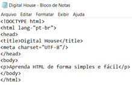

O que é css?
CSS básico
CSS (Folha de Estilo em Cascata) é o código que você usa para dar estilo à sua página Web. CSS básico apresenta tudo que você precisa para começar. Responderemos a perguntas do tipo: Como mudo meu texto para preto ou vermelho? Como faço para que meu conteúdo apareça em determinados lugares na tela? Como decoro minha página com imagens e cores de fundo?
Então, o que realmente é CSS?
tendo uma estruturação dos códigos HTML, você pode utilizá-la em seu editor de texto, adicionar todo o conteúdo que deseja e salvar o arquivo com a extensão .html. Neste mesmo artigo te explicaremos esse exemplo de estruturação de códigos HTML mostrada nas imagens abaixo.

3. Abra o arquivo no navegador:
Assim como o HTML, o CSS não é realmente uma linguagem de programação. Também não é uma linguagem de marcação — é uma linguagem de folhas de estilos. Isso significa que o CSS permite aplicar estilos seletivamente a elementos em documentos HTML. Por exemplo, para selecionar todos os elementos parágrafo de uma página HTML e tornar o texto dentro deles vermelho, você escreveria este CSS:
p {
color
:
red;
}
Vamos tentar: cole as três linhas de CSS acima em um novo arquivo, no seu editor de texto, e salve o arquivo como estilo.css na sua pasta estilos. Ainda assim, precisamos aplicar o CSS ao seu documento HTML. Do contrário, o estilo CSS não irá afetar a maneira como o seu navegador mostra seu documento HTML (se você não estiver acompanhando o nosso projeto, leia Lidando com arquivos e HTML básico para descobrir o que você precisa fazer primeiro).